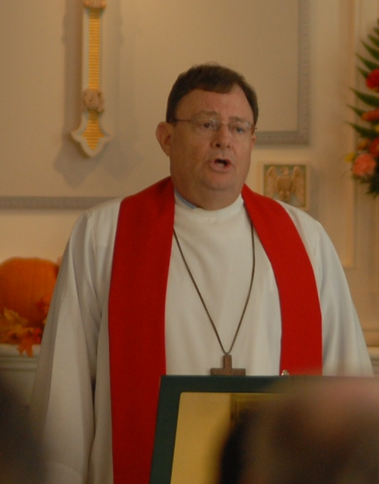

Associate Pastor Glenn A. Englehardt

Pastor Glenn A. Englehardt has served congregations at the Lutheran Church of Our Savior for seven years during the past 35 years, and currently serves as Associate Pastor.
Born in Fort Benning, GA, the Englehardts (his parents and older brother) were a military family and traveled around the world. They returned to Atlantic County, NJ when Pastor was 10 and his father retired from the service.
Pastor Englehardt earned a degree in Biology in 1969 from Rutgers University and, four years later, from the Lutheran Theological Southern Seminary in South Carolina.
His first call was as Director of Christian Education at Eastminster Presbyterian Church in SC, where he met his future wife Sandie. In June of 1975, they were married and Pastor Englehardt was ordained.
Also that year, he was called to be Assistant Pastor for Pastor Wisser at LCOS and served for two years before leaving to lead five parishes in the next 25 years – in Folson, NJ; Union, NJ; Lexington, SC; Columbia, SC; and Spartanburg, SC.
In November 2003, Pastor Englehardt was called to serve as Associate Pastor at Our Savior for Pastor Dunkle. After Pastor Dunkle retired, Pastor Englehardt served as interim Pastor until Wayne Zschech was called to serve as Senior Pastor.
Pastor Englehardt and his wife divorced in 2000, and have two adult daughters. Krista works for the U.S. Government and Mara is a nuclear medicine technician in New York City.
His hobbies include bird watching, sports, reading, movies, playing guitar, playing cards, hiking and nature study.
Pastor Englehardt has volunteered for Habitat For Humanity, has manned the CONTACT hotline, and broadcast monthly devotions for a radio station in South Carolina.
Ministries that he is most passionate about include adult and youth education, social services, Diakonia, working and visiting with seniors, prayer ministry and various social ministry projects.
“While enjoying my second call to Our Savior in more than 30 years,’’ Pastor Englehardt said, “I have enjoyed being reacquainted with parishioners from years ago – and their children and grandchildren – and, at the same time, meeting and working with many new members. Our staff works well together and Senior Pastor Wayne Zschech and I share the same vision of where LCOS needs to move forward with God’s help, by being faithful to our newly created Mission Statement, as we help to make disciples and serve as a faith community both locally and globally.’’